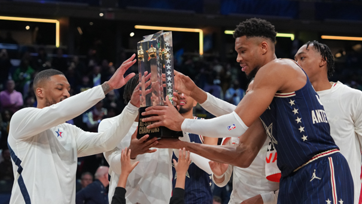

All-Stars
Comme chaque année on râle un peu, devant un All-Star Game devenu l’évènement du tout trop, du pas sérieux, du contenant sans contenu. Mais comme chaque année le réveil sonne au milieu de la nuit, parce qu’on ne raterait ça pour rien au monde. Ne serait-ce pas ça la vraie définition de la folie ?
Capitaine de l'équipe vainqueur (Giannis Antetokounmpo)

Premier quart-temps
A peine le temps de se remettre de l’émotion suscitée par le flow des vestes d’échauffement des joueurs (une émotion chiffrée à 145 balles sur le NBA Store) que le “match” débute avec, ô surprise, une grosse intensité défensive. Nan j’déconne. Des tirs à 3-points, partout, tout le temps, à gauche, à droite, et notamment cinq de suite pour Tyrese Haliburton, histoire de rappeler à tous qu’il connait un peu la salle. Damian Lillard lui, ne trouve pas la mire et on se dit alors que le pauvre homme ne parviendrait même pas à être bourré dans un Springbreak. LeBron James décolle pour la photo, Luka Doncic et Nikola Jokic ne décollent évidemment pas, Bam Adebayo se croit dans sa cour, les petits nouveaux étrennent leur première cape en fin de quart-temps (Banchero, Maxey, Brunson mais pas Barnes) alors que Steph Curry sort du banc, comme Klay Thompson chez les Warriors. Fin du premier quart-temps 53-47, score plus élevé que 40% de mes matchs en PRM le dimanche.
Deuxième quart-temps
La pause entre les deux premiers quarts ? L’occasion de rendre hommage à quelques légendes locales. Reggie Miller, Detlef Schrempf, Dale Davis, Brad Miller, Jermaine O’Neal, Metta World Peace, Rik Smits, entre autres anciens paysans, histoire de rappeler si besoin est que l’Indiana reste une terre de basket depuis des lustres. Puis le début du second quart est marqué par un petit coup de chaud de Tyrese Maxey pour l’Est, par une double connexion LeBron – Booker pour l’Ouest, alors que Paolo Banchero est défendu pour la troisième action consécutive, mais qu’a t-il bien pu leur faire. Trae Young, Paul George et Karl-Anthony Towns débarquent, Ice Trae se voit siffler un marcher, mdr, mais claque un petit pont sur Kevin Durant, surveillez bien le burner account de KD à la mi-temps. Kawhi Leonard réapparait quelques minutes et ose même accélérer sur une action, Trae Young envoie Giannis Antetokounmpo sur orbite sur une passe de 200 mètres, Karl-Anthony Towns n’a rien compris car il enchaine les sprints Donovan Mitchell nous sort sa plus belle imitation de Victor Wembanyama et Damian Lillard se positionne comme un favori au trophée de MVP de matchs en enchainant les ficelles. Comme Stephen Curry tiens, qui en claque quelques unes, et comme Nikola Jokic (non) qui nous offre un sprint incroyable et un petit one-man show (feinte de dunk et demande de changement) avant que Luka Doncic ne confirme qu’il n’en a décidément rien à secouer de ce genre de match puisqu’il enverra à quelques secondes de la mi-temps une énorme bouse… de l’autre côté du terrain. Mi-temps, l’Est mène 104-89, record de points en cumulé sur une mi-temps, inutile de vous dire qu’on n’a jamais vu ça sur un de mes matchs de PRM.
Le 5 de départ de l'est

Troisième quart-temps
Petite pause bienvenue, tartines grillées avec du beurre salé, concert d’Alicia Keys à peu près, et on repart pour un tour, en espérant très naïvement voir un peu de vrai basket. Pas de LeBron James, parti à la douche et remplacé dans le cinq par Steph Curry, Damian Lillard démarre fort avec deux gros tirs de loin, et très vite l’écart grimpe en faveur de l’Est. La raison ? L’Ouest joue avec un deux énormes fainéants (Jokic et Doncic), ça matche au Marrakech du rire mais pas dans un All-Star Game. Fort heureusement Kevin Durant joue au basket mais le trio duo Haliburton – Tatum est plus sérieux, et on assiste ensuite aux dix secondes les plus folles du match avec un fail énorme de Luka Doncic sur une tentative d’auto-alley-oop suivi d’un tir du milieu de terrain de Damian Lillard, bien décidé à aller chercher son trophée de MVP, ça lui fera au moins un trophée cette saison. Shai Gilgeous-Alexander et Paul George semblent vouloir garder un peu de suspense dans ce match, on vient d’utiliser le terme “match”, soit c’est la fatigue, soit c’est la folie, Jaylen Brown et Scottie Barnes se chargent de nous rappeler qu’il n’y a pas de match, et après un tir de Trae Young on termine le quart-temps sur un petit 160-136, on ne vous fait même plus la compa avec la PRM.
Le 5 de départ de l'ouest
Quatrième quart-temps
Le saviez-vous, si j’engageais deux clowns pour animer mon anniversaire ce serait sans doute Luka Doncic et Nikola Jokic. On pourrait presque s’en tenir à cette phrase pour résumer ce dernier quart, mais parlons un tout petit peu de “basket”, par respect pour vous. Jalen Brunson envoie des briques, Luka marque à 3-points avec la planche, Luka et Niko se font une contre-attaque en une-deux, Jaylen Brown alimente la marque et Karl-Anthony Towns est vraiment le seul à penser qu’il est déjà en Playoffs. KAT, KAT, KAT et KAT, le refrain de la fin de match pour un homme qui atteindra finalement la barre des 50 points (!), pendant que Damian Lillard cloturait le débat du MVP de la rencontre en envoyant une dernière bombe à 3-points dans la dernière minute. Le score ? 211-186, et on va se quitter là-dessus, ça vaut mieux et ça évitera les débordements.
MVP du match (Damian Lillard)